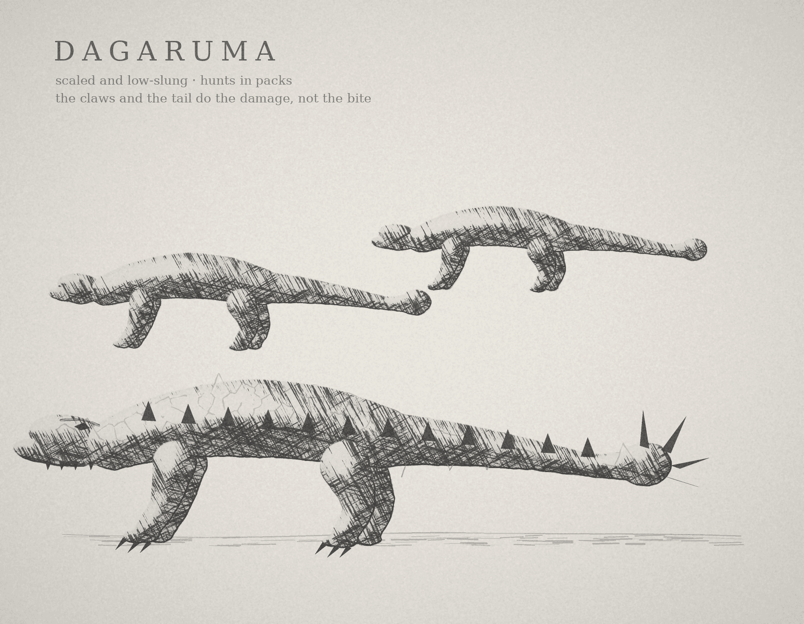

Dagaruma are scaled, low-slung hunters that move in packs with a patient, liquid grace. Their weapons are their claws and their tails, and the tail is the real danger: the bite is unpleasant, but the tail is worse. They are coordinated and opportunistic. They test a circle for a gap, send some of the pack wide to flank, and leave one waiting low in the grass.
Why they are dangerous
- Since the Starfall, most of the prey they once hunted is dead, and the stardust on the vegetation has poisoned the plants. The packs are hungry and desperate, and they have taken to the trade routes.
- The guild’s record has them killing more people each year than any other creature. Figo calls them small fry, and James tells Vael not to believe him.
- Their meat is foul. James claims not to explain how he knows.
What the story shows
Trista explains them to Vael on the road, and the party meets its first pack where four traders have formed a ring of spears around an abandoned wagon (Chapter 2: Sheela and the Shadows of the Past).